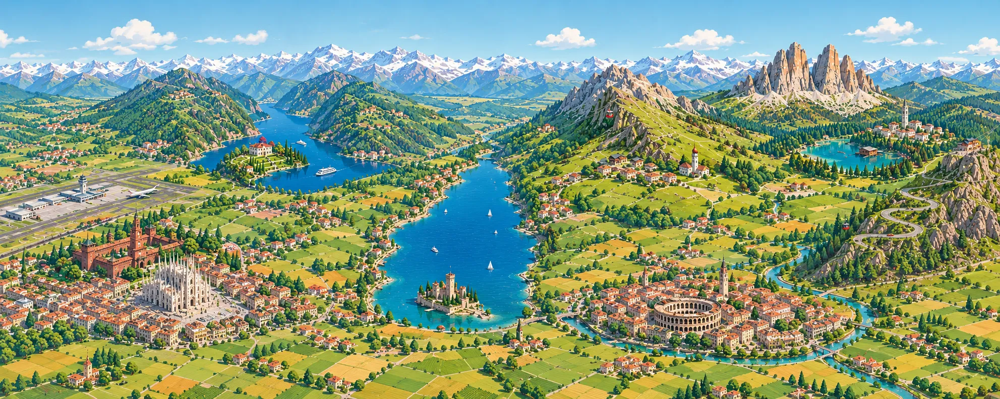

ทริปเพื่อน สูงสุด 12 คน · 25 มิ.ย. - 4 ก.ค. 2027
Milan → Val Gardena → Cortina → Lake Como
ยืนยันแล้ว 3 จาก 12 ที่นั่ง · รับได้สูงสุด 12 คน · รถ 3 คัน นั่งคันละ 4 คนพร้อมกระเป๋าใหญ่ · อัปเดต 04/10/2026
แตะรถ บีบแตรเรียกเพื่อนในคันนั้น
ที่นั่งจัดไว้ดูภาพรวมเฉยๆ ยังไม่ได้แบ่งคันจริง
เส้นทางวนจาก Milan ผ่าน Lake Garda ขึ้น Dolomites แล้วลงมา Verona กับ Como · แตะป้ายเพื่อไปดูแผนวันนั้น

ปัดซ้ายขวาเพื่อดูทั้งเส้นทาง
แตะป้ายชื่อสถานที่บนภาพเพื่อดูรูปถ่ายจริง · แตะชื่อร้านเพื่อเปิดใน Google Maps (ร้านกับวันปิดเช็กจากเว็บ 06/10/2026 ใกล้วันไปค่อยเช็กอีกรอบ)
| รายการ | ต่อคน (บาท) | สถานะ |
|---|---|---|
| ตั๋วเครื่องบินไปกลับ | ~24k | เช็กราคาแล้ว |
| ที่พัก Dolomites 6 คืน | 18-21k | เช็กราคาแล้ว |
| ที่พัก Milan + Como 2 คืน | 5-6k | ประมาณ |
| ค่ากิน 9 วัน | 15-21k | ประมาณ |
| กระเช้า + ค่าเข้าทางเดิน | 6-8k | ประมาณ |
| รถเช่า 3 คัน (คันละ 4 คน) | 3-7k | เช็กราคาแล้ว |
| วีซ่า + ประกันเดินทาง | ~5k | ประมาณ |
| น้ำมัน ทางด่วน ที่จอด | 3-4k | ประมาณ |
| รวม (ตั้งเป้าไม่เกิน 95k ต่อคน) | 79-96k |
ราคาเช็กจาก Google Flights, Booking.com และ KAYAK วันที่ 27/09/2026 ราคาที่พัก Ortisei คิดจากราคา 4 คืนหารลงมา ถ้าเลือกอพาร์ตเมนต์ที่มีครัวแล้วทำอาหารเย็นกินเอง จะประหยัดได้อีกราว 5-8k ต่อคน